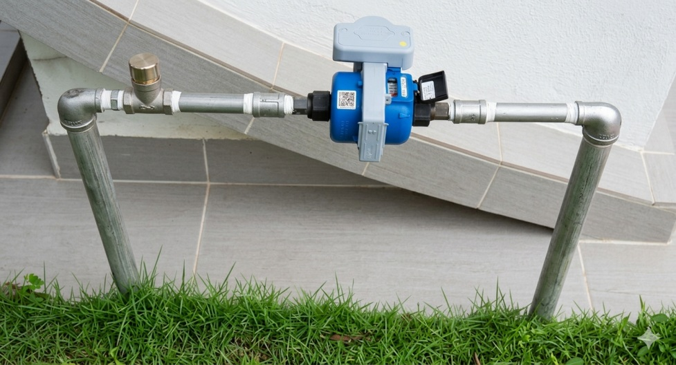

Smart Metering | Advanced Metering Infrastructure (AMI) | Smart Water | Utility IoT | NB-IoT
Welcome to my professional knowledge hub focused on Smart Metering, Advanced Metering Infrastructure (AMI), Smart Water, Utility IoT, NB-IoT connectivity, and utility digital transformation.
This platform brings together my industry publications, technical whitepapers, and practical insights drawn from real-world utility technology deployments across Asia.
My goal is to share lessons learned, technology perspectives, and implementation considerations that help utilities make better decisions when adopting smart infrastructure solutions.
Robust field deployment footprint demonstrating Advanced Metering Infrastructure (AMI) across diverse utility infrastructure topographies in the ASEAN region.
From upscale modern residential frameworks to complex technical environments, these technical solutions drive utility digitalization and large-scale, reliable NB-IoT smart water metering rollouts.
